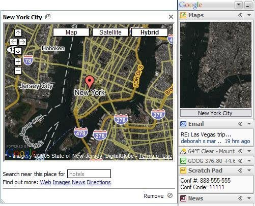

Anatomy of a Web Map
What is a web map?
paper maps
paper maps
▼
digital maps
paper maps
▼
digital maps
▼
web maps
How did web maps come to be?
 ta da!
ta da!
 slippy map
slippy map Zoom level 0: one tile for the world.
Zoom level 0: one tile for the world. Zoom level 1: 4 tiles for the world.
Zoom level 1: 4 tiles for the world. Zoom level 2, 3, 4, 5
Zoom level 2, 3, 4, 5 Zoom level 13
Zoom level 13http://tile.openstreetmap.org/4/2/6.png
this is the name of the tile server.
http://tile.openstreetmap.org/4/2/6.png
this is the z value, or the zoom level.
http://tile.openstreetmap.org/4/2/6.png
This is the x/y value
base layer
base layer (raster tiles)
data/content/feature layers
▲
base layer (raster tiles)
Filetypes
GIS uses shapefiles
Web maps prefer KML
The Usual Suspects:
 Pretty!
Pretty!Style your map:
CartoCSS (or just carto)
Convert a Shapefile to GeoJSON with
OGREor write your own GeoJSON with
geojson.ioDon't want to mess with any of that?
Use
CartoDBIt takes care of almost all of this for you!
Thanks to:


 Learn More:
Learn More:{kind=link}